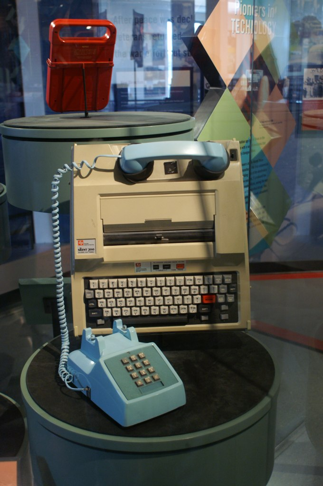
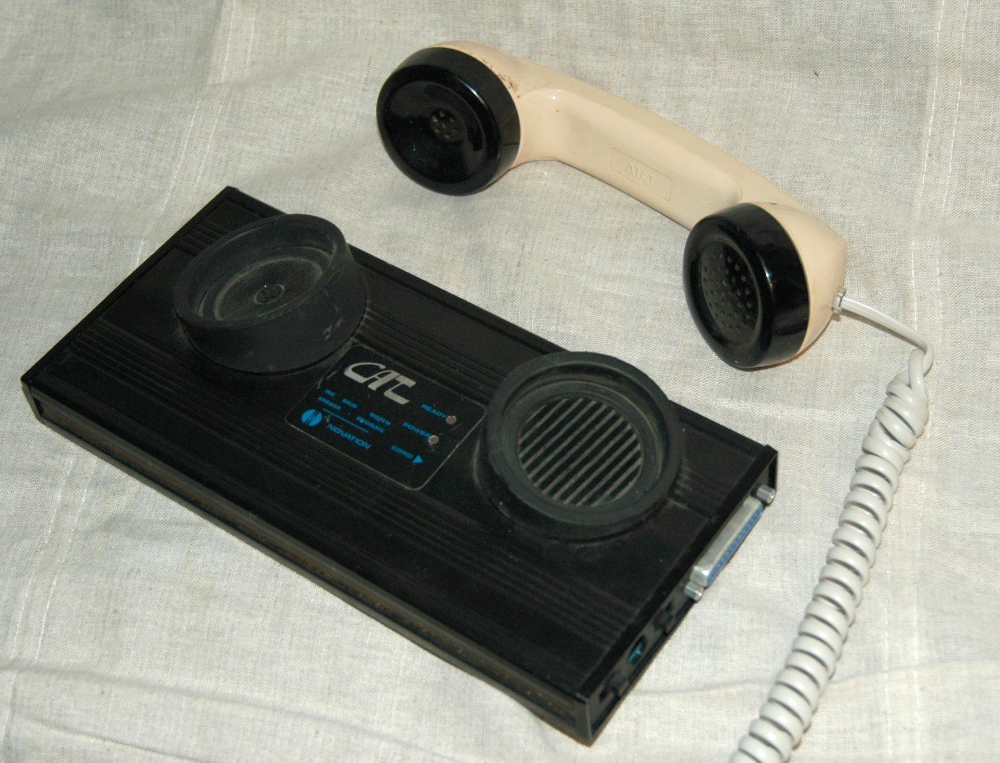

The modem
handshake.
Have you ever wondered what your modem was saying before you got online? Inside that familiar racket, two machines were listening to a telephone line and deciding how much it could carry.
Eight generations on the line
Origins · Before the home modem
Put the phone down. Gently.
The telephone network already knew how to carry a voice. Bell’s 101C data set gave a teletypewriter a voice of its own, translating electrical pulses into tones. Its 103A family let two terminals speak at once, each in its own range of pitches. Bell’s station guide, §2.01 · 103A operating manual, §1.05
A handset could be the whole interface. In the 1960s, deaf inventors and organizers Robert Weitbrecht, James Marsters and Andrew Saks helped make telephone conversations possible by teletype. Rest the handset in an acoustic coupler, type your message, then type GA for “go ahead” when it was the other person’s turn. Office of Technology Assessment, pp. 5–6
A modem you could solder
Lee Felsenstein traced his Pennywhistle circuit to 1973. By March 1976, readers of Popular Electronics could order the parts, cabinet included, from M&R Enterprises for $97.50. The receiver had a clever way to cope with electrical drift. Each typed character ended on the same signal, giving the circuit a fresh reference before the next character arrived. Felsenstein’s construction article, pp. 43–48
“He found the rubber cups.”Lee Felsenstein on kit maker Marty Spergel and the parts that turned a circuit into a product. The Amp Hour, episode 684. He recalled a July issue in that interview. The printed construction article is dated March.
Dennis Hayes and circuit designer Dale Heatherington put the modem on a computer board. Heatherington’s photos show the 80-103 test station in his home in 1977, the 300-baud 80-103A beside an IMSAI computer, and the people assembling the boards. Here is where our listening story begins, with a home machine trading one bit at a time. Heatherington’s album · Home test station




Chapter 01 / 1970s · Bell 103 compatible
A pair of whistles
300 bit/s. Type one letter. A little burst of changing pitch travels down one pair of wires. The reply can come back while your finger is still on the key.
Imagine a terminal sending the letter H. Between keystrokes its modem is already sounding a steady mark. The start bit shifts the pitch and tells the far terminal when to begin reading the letter. A stop bit returns the line to mark. No keyboard rhythm to match: the next letter can start whenever the typist is ready. The chapter’s signal study sends HELLO from the caller while the answerer holds its mark. Heatherington’s 80-103A manual and schematics
In the Bell 103A2 frequency plan, each end had two pitches. The caller used nominally 1,270 Hz for a mark (1) and 1,070 Hz for a space (0). The answerer used 2,225 and 2,025 Hz. The separate pairs let both ends talk at once, or full duplex. A steady mark held the channel between characters. In a common start/stop format, a start bit, eight data bits and a stop bit put ten bits on the wire for each character. At 300 bit/s that gives just 30 characters a second. This exchange needs a shared frequency plan. The international V.21 alternative used different pitches, so matching the speed alone was insufficient. Felsenstein’s construction article, p. 43 · Bell System Practices, table A · V.21
Chapter 02 / 1980 · V.22
Read the turn of a wave
1,200 bit/s. A pitch can carry more than its name. Change where a wave sits in its cycle and the receiver can read two bits in a single decision.
The international telephone standards committee, CCITT, published V.22. The standard keeps the caller and answerer in separate frequency bands, centered at nominally 1,200 and 2,400 Hz. Each transmitter makes 600 decisions a second. From one decision to the next the wave can keep its phase, turn a quarter of a cycle, turn halfway or turn three quarters. Those four choices stand for four possible pairs of bits. Compare the arithmetic with Bell 103: twice as many decisions, twice as many bits per decision, four times the line rate. V.22, §§2.1, 2.5.
The unit for decisions per second is baud. At 300 bit/s one symbol carried one bit. Here, 600 baud carries 1,200 bit/s. Both ends must also agree on startup and scrambling, the reversible mixing that breaks up repetitive data. V.22 includes optional 600-bit/s operation. AT&T’s earlier Bell 212A was a separate 1,200-bit/s design with its own answer sequence. Its 300-bit/s mode could talk to a Bell 103. A multistandard modem had to recognize the right conversation before it could deliver that first character. V.22, §§1, 6 · CML Microcircuits’ Bell 212A implementation
Chapter 03 / 1984 · V.22bis
Sixteen ways to say it
2,400 bit/s. Keep the same symbol clock. Give the receiver another clue by varying the size of the wave as well as its phase.
V.22bis held each direction at a nominal 600 baud. Imagine a dial with a pointer that can change both angle and length. Its tip can land on sixteen agreed positions, called a constellation. Each position represents four bits, so 600 symbols per second now carry 2,400 bit/s. This combination of phase and amplitude is quadrature amplitude modulation, or QAM. The price is precision: a distorted wave can make neighboring positions hard to distinguish. V.22bis, §§1–2.
Modem designers had already worked with this geometry on costly business circuits. G. David Forney Jr. recalled how he and Robert Gallager worked on the spacing of sixteen signal points at Codex. That spacing affected how much a received wave could rotate before a neighbor looked more likely. Forney’s oral history.
The CCITT specified an adaptive equalizer to compensate for the way a particular line smears one symbol into the next. During startup a distinctive repeating pattern of bit pairs identifies the faster mode. Both modems must also support 1,200-bit/s operation compatible with specified V.22 modes. Depending on national practice the answering modem might add a guard tone. That extra pitch carried no user data. Two otherwise successful calls could sound different. V.22bis, §§1, 2.1, 6.
Chapter 04 / 1984 · V.32
Subtract your own voice
9,600 bit/s. The modem already knows every symbol it just sent. What if it learned how those symbols sounded on their way back?
CCITT’s V.32 put both directions around the same nominal 1,800 Hz carrier. Each could now use enough of the voice channel to send 2,400 symbols a second. Some outgoing signal inevitably leaked back. During training, known signals let each modem estimate its own echo. In operation it could subtract a predicted copy from the mixture and recover the distant signal underneath. Training took on a new job: learning this particular call’s electrical path. V.32, §§1, 2, 5.
At 9,600 bit/s a symbol delivers four information bits. In the 1993 V.32 specification, 4,800 bit/s was mandatory and 9,600 optional. Units offering 9,600 had to interoperate with a 16-point uncoded mapping. They could also negotiate a 32-point trellis-coded mapping. Gottfried Ungerboeck at IBM developed the underlying coding principle. Lee-Fang Wei contributed the code used here. Restricting which symbol may follow which lets a receiver consider a whole sequence when noise makes an individual decision ambiguous. V.32, §1 · Ungerboeck’s 1982 paper · Forney, Brown, Eyuboglu & Moran, 1996
Chapter 05 / 1991 · V.32bis
Six bits at the same beat
14,400 bit/s. The clock still ticks 2,400 times a second. A denser constellation and a shared set of legal paths through it make each tick worth more.
CCITT’s V.32bis brought the trellis-coded family up to 14,400 bit/s. At the top rate, six information bits per symbol select among 128 possible transmitted points with the help of a coding bit. That extra bit gives the receiver a constraint it can use to recover the most likely path. Both ends must implement the five rates from 4,800 to 14,400 in 2,400-bit/s steps. They exchange rate patterns at startup, and either end can later propose another speed without repeating full training. A noisy line can keep the connection alive at a lower rate. V.32bis, §§1, 4–5, 8.
Two optional companions explain why a file-transfer display could disagree with the connect message. V.42’s LAPM protocol packages data into checked frames and arranges retransmission when one arrives damaged. V.42bis compresses recurring strings using a shared dictionary over an error-controlled link. A page of repeated text may fly through. An already compressed archive offers little repetition to exploit. Neither changes the agreed symbol clock. V.42 · V.42bis
Chapter 06 / 1994 · V.34
Take the measure of the line
28,800 bit/s. One call loses its high frequencies. Another arrives almost intact. V.34 spends part of the handshake finding out which line it has.
At startup V.8 lets the caller advertise supported modulations and the answerer return a compatible menu. V.34 then sends a comb of probing tones. From the differences between what should arrive and what actually does, the modems can choose a carrier and symbol rate suited to each direction. They train their equalizers and echo cancellers, then exchange parameters before releasing user data. A burst you hear at this point can be a measurement with no letters or file bytes in it at all. V.8 · V.34, §11.
The ITU-T’s September 1994 edition reached 28,800 bit/s. More symbols could fit on good lines than under V.32bis, while trellis coding and constellation shaping squeezed more information into the available power. Shaping favors combinations that use less energy on average. G. David Forney Jr., Les Brown, M. Vedat Eyuboglu and John L. Moran III of Motorola describe how the working group combined proposals from several teams. The mandatory symbol rates included 2,400, 3,000 and 3,200 baud. Other negotiated rates let equipment take advantage of more favorable lines. V.34 · Forney, Brown, Eyuboglu & Moran, 1996
Chapter 07 / 1996 · Revised V.34
The last few thousand bits
33,600 bit/s. By now two calls with nearly identical openings can finish at different speeds. The probe measures the line. The negotiated mapping decides how much data it will carry.
ITU-T revised V.34 in October 1996. Its two new primary-channel rates, 31,200 and 33,600 bit/s, were optional. The highest rate uses the mode conventionally rounded to 3,429 symbols per second. The 1994 equipment already knew this symbol rate. The revision enlarged the set of usable signal points and defined how to map more bits onto them. On a sufficiently quiet, wide line the receiver can distinguish those closer neighbors. 1996 V.34, §§1, 6.1 and table 10 · Forney, Brown, Eyuboglu & Moran, 1996
A caller therefore needed compatible implementations at both ends as well as a favorable result from training. A modem using the older edition could still establish a V.34 connection. A 33.6-capable pair might agree on 28.8 or less. The hum of the line probe alone cannot tell you which rate the two machines chose. That information comes in the parameter exchange. V.34, §11.
Chapter 08 / 1998 · V.90
Let the exchange make the wave
56,000 bit/s. There is one more way to gain speed. Put the answering modem on the digital side of the telephone exchange.
In V.90 the provider feeds carefully chosen pulse-code modulation (PCM) values into the digital network. At the local exchange those codes become analog levels on the subscriber’s wire, 8,000 times per second. The home modem trains to distinguish the usable levels after the loop has distorted them. Avoiding an extra analog-to-digital conversion on the downstream trip makes up to 56,000 bit/s possible. In the other direction the exchange still digitizes the subscriber’s waveform, so upstream uses V.34 techniques at up to 33,600 bit/s. V.90, §§1, 6–9.
Brent Townshend documented the digital-server approach in his patent. Before V.90, U.S. Robotics’ x2 and the Rockwell/Lucent K56flex camp offered incompatible paths to 56K. An ISP’s choice could determine which modem a subscriber bought. ITU-T formally approved V.90 in September 1998. Its headline number was a ceiling: U.S. Robotics documented a U.S. download limit of 53,333 bit/s for its product, and line impairments could reduce it further. V.92 later added options including PCM upstream and quicker reconnection. Townshend’s patent · Netfront’s dial-up compatibility notes · U.S. Robotics installation guide · V.90 · V.92
“So it’s characterizing your channel that’s coming from the central office to your home.”
Brent Townshend, Computer History Museum oral history, 2022, p. 47
After the last training excerpt, a real V.90 pair still has work to do. The home modem can ask the server to send a known test of the digital path. The pair then exchanges final settings and starts carrying data. CONNECT appears on the terminal as a local result code. For an Internet call, the computers can now negotiate a PPP link and its network settings. At last the browser has somewhere to send its first request. V.90, §9 · V.250 · IETF RFC 1661
Epilogue / Beyond the voice channel
When the speaker went quiet
The dial-up squeal disappeared from the room. The work of learning a wire and agreeing on a way to use it carried on.
ISDN · A digital call from the outset
Basic-rate ISDN already coexisted with analog dial-up. It provided two 64-kbit/s B channels for voice or data and a separate 16-kbit/s D channel for signaling. Call setup moved into messages on that signaling channel. One bearer could carry a phone call while the other carried data. Multilink PPP could combine two data calls for a nominal 128 kbit/s before overhead. The familiar idea of establishing a session survived even as the exchange provided digital channels to the user. I.430 · IETF RFC 1990, Multilink PPP
DSL · Use more of the copper
ADSL terminates at telephone-company equipment on the subscriber loop, bypassing the voice-band restriction of a switched call. On lines provisioned for analog voice, filters separate the phone from higher-frequency data. Discrete multitone modulation divides the available spectrum into narrow carriers. Training determines how many bits each can support, so a noisy patch costs capacity locally. John Cioffi and Stanford researchers Jacky Chow, Peter Chow, Minnie Ho and Huiling Lou helped develop this approach. ITU-T standardized ADSL in G.992.1 in 1999. G.992.1 · Stanford’s account of the DMT team
DOCSIS · Share the television cable
The cable industry faced another problem: many subscribers shared a coaxial segment. A modem must range with the operator’s equipment to align arrival times and transmit power, and the operator schedules upstream opportunities. CableLabs dates the preliminary industry specification to 1996 and the final MCNS specification to March 1997. Later DOCSIS 3.1 uses many narrow carriers and adjustable modulation profiles. As in dial-up, the receiver first needs to know what the physical path will allow. Now it also needs to know whose turn it is. CableLabs, network primer §§6, 9 · CableLabs, DOCSIS 3.1 profiles
Inside the signal study
The cover instrument folds time into depth. Read frequency from left to right. Each ridge shows the strengths of pitches in a short slice of the generated audio, with later slices closer to you. During playback the bright trace marks the current slice.
- 0–4 seconds · Dial. Two peaks at once select a telephone keypad digit. The study steps through 1, 5 and 9.
- 4–8 seconds · Answer. A steady 2100 Hz tone illustrates the ordinary answer carrier.
- 8–12 seconds · Probe. A comb of simultaneous pitches samples different parts of the line. Gaps in the comb let the receiver look for distortion.
This is an original teaching montage with stretched timing and normalized levels. It juxtaposes Q.23 digit pairs, an answer tone and the V.34 probe frequencies. The probe uses the phase signs from Table 17. It omits negotiation, training and user data. ITU-T Q.23 · V.25 · V.34, Table 17 (1994).